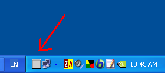
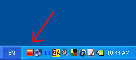

Free software that controls per-process CPU usage. “Active” software CPU cooler.
(Apparently, the non‐Unicode version in the same zip works on Windows 98/me too.)
BES : un limiteur de charge CPU pour
quand il fait trop chaud pour travailler …
(You can check the most up-to-date documents online: http://mion.faireal.net/BES/)
BES is a small tool that throttles the CPU usage for the process you “target”: for instance, you can limit the CPU usage of a process which would use CPU 100%, down to 50% (or any percentage you’d like). With this, you can use other programs comfortably while doing something CPU-intensive in the background.
By limiting the CPU load, you can also cool down your CPU immediately when it happens to get too hot. It’s an “active” software CPU cooler. Conventional soft-coolers save CPU energy by making CPU sleep when it is idle. They passively wait until CPU gets idle. BES is more aggressive: it cools CPU by making the “heating” process slow down, i.e. periodically forcing CPU to be idle for a short time. (But you should install a better hardware cooler if you often need to use BES for this purpose. Active soft-cooling might be an interesting hack, but it's just a workaround after all. On the other hand, if your application uses CPU 100% meaninglessly, let BES do the job!)
Furthermore, BES can hide any windows you don’t want to be seen for some reason, without killing the process,
and restore the hidden windows again anytime you like.
BES is GPL’ed free software, distributed with (real messy) source code.
BES has a multilingual interface: menu language is switchable between Chinese, Japanese, English, etc.
When minimized, BES is sent to the system tray,
as a gray icon when idle, a red icon when active:
 
Why is it called BES or “Battle Encoder Shirase”? —There’s a long story about this weird name, but basically, it’s a parody of two anime titles: Battle Programmer Shirase and Battle Fairy Yukikaze. “Battle encoder” means a crazy person who doesn’t stop encoding even when the CPU reaches a very high temperature. BES helps them to go on by cooling the CPU in a hackish way.
Ver. 1.2.2 2006-12-12
An old bug was fixed.
Once you let BES “watch” anything, BES tried to close an already-closed thread-handle
when exiting. The handle is closed anyway,
so this is not critical,
and probably you didn’t even notice anything,
but this was an obvious bug.
Also various small improvements.
Ver. 1.2 2006-10-01
This version has a small bug (See above), but is relatively well-tested.
If 1.2.2 does not work well, you might want to try this old one.
BES.exe /1.2.0 Unicode MD5=2F927E5BCC8A9ADC2DC957D1C998D3A8 BES.exe / 1.2.1 β Unicode MD5=12A8B5D4B2918D8A35EEF1983E4BDEBA BES.exe / 1.2.2 Unicode MD5=070FA393F92867F8138D96EADA53356C
Limit & Limit/Watch: Already explained.
Close: Close this dialog.
Refresh: Refresh the list. When this dialog is opened, BES will gather the information needed to list up all the processes running. If you “refresh,” BES do the same thing again. It’s like a browse’s reload button, and is useful when a new application is started after you open this dialog (that new application will not be listed until you refresh the list).
Hide: Hide all the windows related to the selected process. The process is not killed. Just related windows will get invisible.
Show: Show the windows you hid by “Hide” if the target process is selected in the list. (In other words,
you should remember which target you hid. BES actually knows it, but (for security reason) it won’t restore the hidden windows
until you explicitly specify the target process.)
NOTE:
You can hide a running application, close BES, and restart BES after a long while.
Even if you do that, BES still remembers which windows it hid, and will restore them when you click [Show].
However, if the target ends on its own, BES can’t restore its windows (which is natural).
If you shut down or reboot the system, BES will forget about everything it hid (which makes sense too, as everything ends anyway).
Ask/show: Read the above note. Basically BES can choose the windows to restore automatically and properly. However, when something unexpected happens and things are foobared, you can manually tell BES which windows (related to the selected process) it should show. Using this, you could even force a window that is originally hidden to be shown too (some applications generate unseen windows for various reasons).
List All: The process list is usually not complete. System processes that you are not likely to target—or that you can't target, because of the security restrictions—are not listed by default. [List All] will tell BES to list everything anyway.
Unfreeze: This is just for emergency.
I bet this never happens to you, but imagine what would happen if BES crashed
just after it made the target sleep and not before it reawakened the sleeping baby
(yes, BES is a tool that periodically makes the target sleep for a very short time).
The target would then freeze.
BES is tested for a long time (from 0.8.x until 1.0 beta 18) and such a thing has never happened even once,
but in theory it could happen (you know anything weird and unexpected could happen on Windows).
Even if that happens, don't panic: restart BES, open this target dialog, go to the listbox and select the target that is frozen.
Then just click [Unfreeze].
This will reset what is called “suspend count” for each related thread, and unfreeze the application in question.
NOTE: “Unfreeze” doesn’t work if the target freezes because of its own bug and BES is not responsible.
The only situation “Unfreeze” would work is, when BES crashes itself.
As you know too well, many applications freezes or crashes on its own, totally unrelated to BES.
Friend: When the item selected in the list is something that you are unlikely to target (i.e. unlikely to be CPU-intensive), you may want to tell BES that it’s CPU-friendly by clicking [Friend]. If you do that, BES recognizes the application in question as friendly, and always put it in the bottom of the list. (You can do that if you’d like to, but it is not something you must do to use BES).
Unknown: This tells BES to treat the selected item neutrally, not as Foe nor Friend.
Everything is Unknown by default.
NOTE: There are a few exceptions, such as VirtaulDub.exe. BES knows VD can be very CPU-intensive,
and always considers it as a foe (you cannot change that, as it is hard-coded).
What is meant by “VD is a foe” here, is “it may make CPU too hot.”
Nothing more than that.
It doesn’t mean VD is a bad program at all.
Foe: This tells BES to consider the selected item as Foe, i.e. a greedy application that often uses CPU too much, which BES often has to “attack.” Probably you will target the same foe again and again, possibly everyday. Once you tell BES that it’s a foe, BES automatically list it at the very top of the target list so that you can select it quickly. If you “attack” a process, that process will be automatically treated as a Foe from then on.
NOTE: The distinction between Friend, Unknown, and Foe is only in the listing order. BES will “attack” a Foe and a Friend exactly in the same way, once you order BES to target it.
Watch: This is like Limit/Watch, but using this you can target the application that is not running. BES keeps watching it, and if it is started, BES immediately begins to limit its CPU usage.
Snap: Make a detailed list of the processes currently running, and save it as a text file. Might be informative.
Exit: End the BES. You can’t exit if one or more limiters of BES are active. First unlimit all, and you can exit.
Exit anyway: End BES anyway even if it’s active. This is just for emergency, when you must end BES forcefully for some reason. BES is a babysitter that periodically lets the target sleep, and it’s a bad idea to tell it to leave without finishing its job properly. If BES is active, you should first do “Unlimit all.” (Even if told to exit anyway, BES will still try to finish its job gracefully.)
Select target / Unlimit all / Control: Already explained.
Unwatch: Use this when you want BES to stop watching the application after you tell BES to watch it.
Real-time mode: When enabled (ticked), BES demands the system to give it a very high priority (“real-time” is like telling Windows, “Hey, if I tell you to do anything, you do it right away without any delay. Don’t let me wait, okay?”). By doing so, probably BES can start as swiftly as possible even if CPU load is already near 100%. BES is a special kind of application that tries to control the CPU usage when it is already monopolized. Yet BES itself needs to get some time slices (i.e. use CPU a little) to do its job. So giving a special priority to it may make sense. Furthermore, in the real-time mode, BES will lower the process priority of the target. When disabled (unchecked), BES will behave modestly, just like an ordinary application. In reality, this usually doesn’t make any big difference.
Changed in 1.2.1: BES 1.2.1 runs as HIGH_PRIORITY_CLASS in non real-time mode (default). It was NORMAL_PRIORITY_CLASS in ver. 1.2.0 and before. In real-time mode, BES gets REALTIME_PRIORITY_CLASS in every version.
Write log: Tell BES to write a debug log. Might be informative, but usually not needed, just causing a waste of resource.
Language: Switch the menu language.
About / Keyboard shortcuts / Visit homepage / Online help: Self-explanatory.
Ukagaka: If you have no idea, don’t bother yourself. Well, simply put, Ukagaka (→ Wikipedia: Ukagaka) is a kind of desktop mascot system. If an Ukagaka or a compatible ghost is running, BES sometimes (but quite rarely) communicates with it. For instance, when you open BES’s about box, the ghost may start chatting and tell you the version information of BES.
The following command line tells BES to watch target.exe, and—when target.exe starts running—throttle its CPU usage so that target.exe will be only allowed to use CPU (100 − percentage) % at most:
"C:\path\to\bes.exe" "D:\path to\target.exe" [percentage] [--minimize]
Optionally, you can use an integer between 1 and 99 as percentage. If percentage is omitted or invalid, the last known valid percentage for target.exe is automatically used (if this is the first time to target target.exe, the default reduction 33% will be applied, unless percentage is specified). Note that, when started from command line, BES will Watch/Limit the target, not just Limit it.
The --minimize option, available since 1.1β7, tells BES to start as minimized (sent to the system tray).
If you have any trouble, you might want to contact the author at
More generally, if you are having a hard time in your life, or if you feel really tired, take some rest and watch Floral Magician Mary Bell, especially Episodes 30–50.